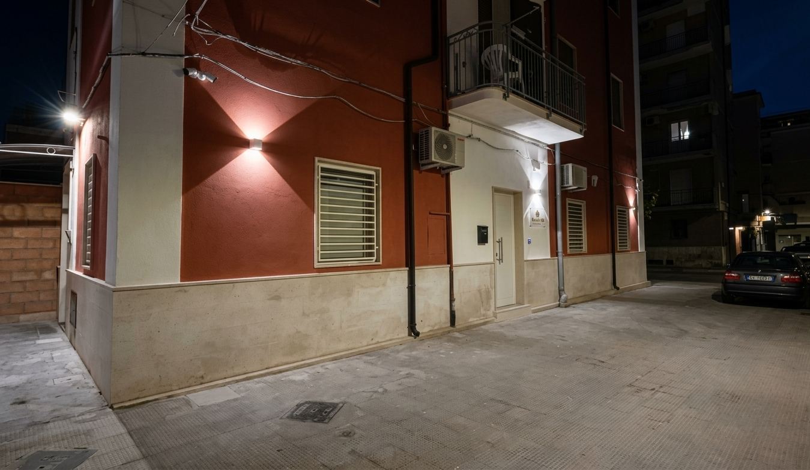

Un B&B a Margherita di Savoia, tra saline e mare A B&B in Margherita di Savoia, between salt pans and sea
I Giardini di Rita è un B&B a pochi passi dal mare di Margherita di Savoia, a 100 metri dalla spiaggia e a 600 metri dalla Chiesa Matrice Maria SS. Immacolata. Le camere hanno aria condizionata e WiFi gratuito, e si affacciano su un giardino con angolo ristoro; su richiesta è disponibile anche un servizio ristorante. Il parcheggio privato è disponibile con un costo aggiuntivo. La colazione, italiana o à la carte, apre la giornata; la reception è attiva 24 ore su 24 e parla italiano e inglese. Nei dintorni si può camminare, pescare o pedalare, e lo staff aiuta a organizzare un noleggio auto per chi vuole spingersi più lontano. I Giardini di Rita is a B&B steps from the sea in Margherita di Savoia, 100 metres from the beach and 600 metres from the Chiesa Matrice Maria SS. Immacolata. Rooms come with air conditioning and free WiFi, opening onto a garden with a small dining area; restaurant service is available on request. Private parking can be arranged for an extra fee. Breakfast, Italian or à la carte, starts the day, and reception is staffed around the clock in Italian and English. Nearby, guests can hike, fish, or cycle, and the staff can help arrange a car rental for those heading further afield.
Margherita di Savoia sorge su un'antica pianura un tempo paludosa, lungo la costa adriatica, accanto alle saline più estese d'Europa — le seconde al mondo per grandezza — quattromila ettari di bacini d'acqua salata dichiarati riserva naturale e zona umida di importanza internazionale, dove l'acqua vira al rosa e i fenicotteri sostano da primavera ad autunno. La sabbia ferrosa delle spiagge alimenta le terme del paese, note per le proprietà curative delle acque madri. Il centro, circa undicimila abitanti, vive ancora del sale, delle sue cipolle bianche IGP e di un lungomare che d'estate si anima di stabilimenti e feste. Margherita di Savoia rises on a once-marshy plain along the Adriatic coast, next to Europe's largest salt pans — the second largest in the world — four thousand hectares of brine basins recognised as a nature reserve and wetland of international importance, where the water turns pink and flamingos stop over from spring to autumn. The iron-rich sand of the beaches feeds the town's thermal baths, known for the curative properties of their mineral-rich waters. Home to around eleven thousand people, the town still lives off salt, its IGP white onions, and a seafront that fills with beach clubs and festivals each summer.
Prenota il tuo soggiorno Book your stay
Prenota su Booking.com Book on Booking.com